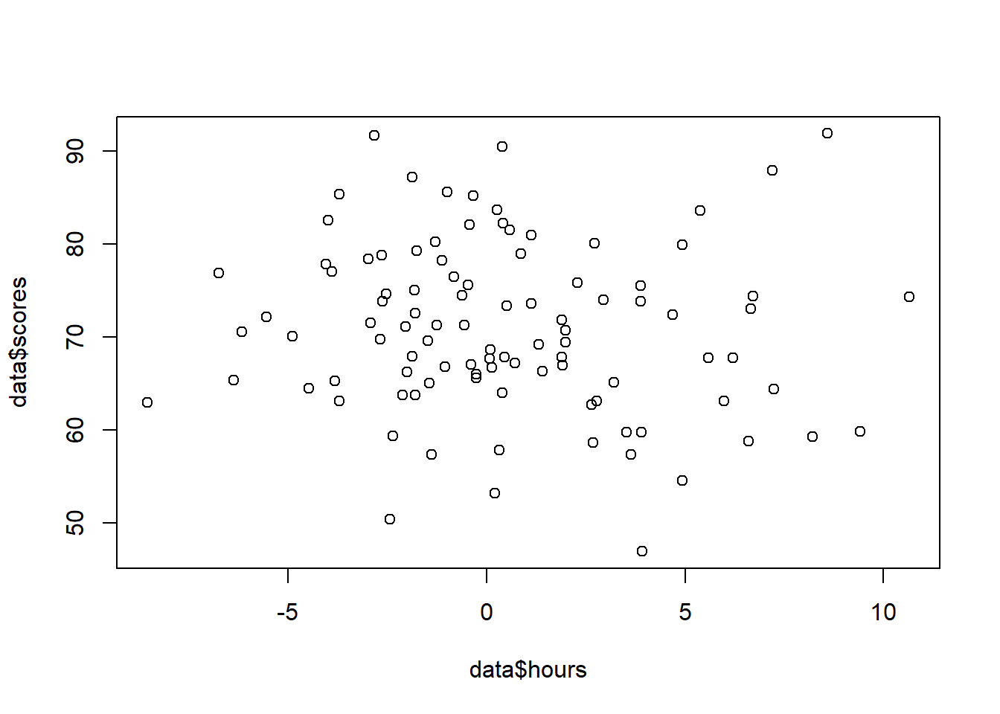
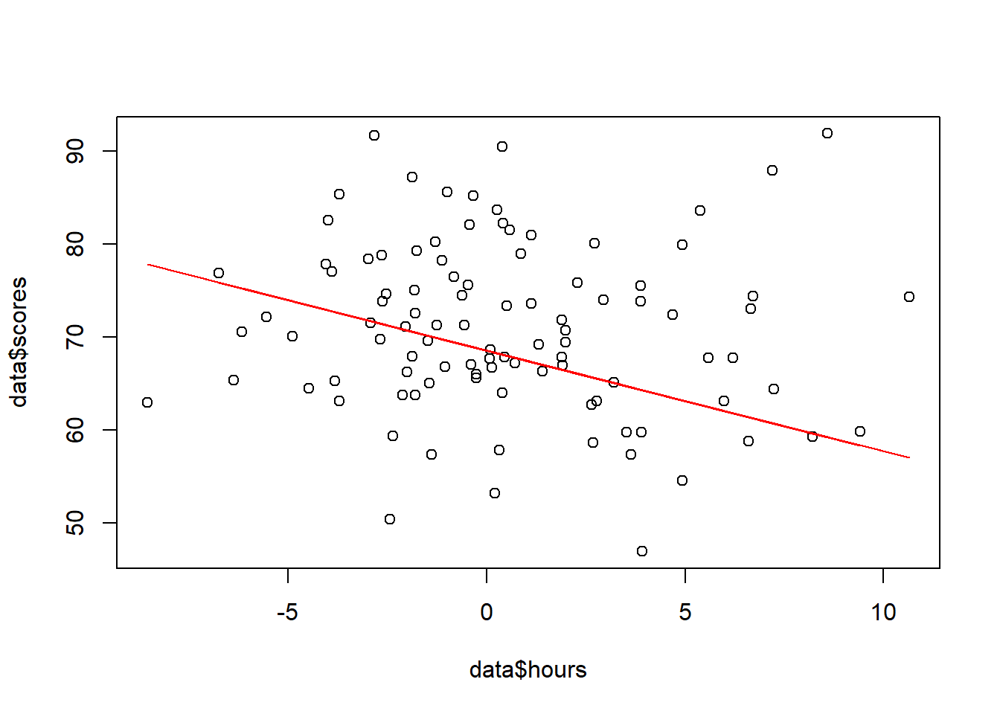
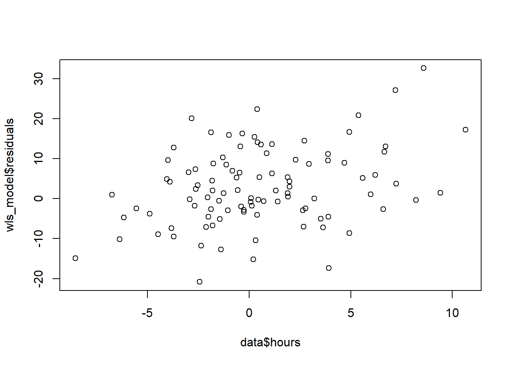

# Generate exam scores and study hours
set.seed(123)
scores <- rnorm(100, mean = 70, sd = 10)
hours <- rnorm(100, mean = 20, sd = 5)
hours <- rnorm(100, mean = 0, sd = hours * 0.2) # Add heteroscedasticity
# Create a data frame
data <- data.frame(scores, hours)Introduction
Tired of your least-squares regression model giving wonky results because some data points shout louder than others? Meet Weighted Least Squares (WLS), the superhero of regression, ready to tackle unequal variance (heteroscedasticity) and give your model the justice it deserves! Today, we’ll dive into the world of WLS in R, using base functions for maximum transparency. Buckle up, data warriors!
Example
The Scenario: Imagine studying the relationship between exam scores and study hours. But wait, some students took the test multiple times, inflating their data points! This unequal variance can skew your ordinary least squares (OLS) model, making it unreliable. WLS to the rescue!
Steps
Step 1: Gathering the Troops (Data):
Let’s create some simulated data:
Step 2: Visualizing the Battlefield:
A scatter plot is our trusty map:
plot(data$hours, data$scores)
Do you see those clusters of high-scoring students with more study hours? They’re the loud ones skewing the OLS line.
Step 3: Building the WLS Wall:
It’s time to define our weights. We want to give less weight to observations with high variance (those loud students) and more weight to those with low variance. Here’s a simple approach:
# Calculate inverse of variance
weights <- 1 / (data$hours)^2
# Fit WLS model
wls_model <- lm(scores ~ hours, weights = weights, data = data)Step 4: Inspecting the Model’s Performance:
Let’s see if WLS silenced the loud ones:
summary(wls_model)
Call:
lm(formula = scores ~ hours, data = data, weights = weights)
Weighted Residuals:
Min 1Q Median 3Q Max
-75.854 -1.456 0.927 3.509 57.472
Coefficients:
Estimate Std. Error t value Pr(>|t|)
(Intercept) 68.524 0.632 108.421 <2e-16 ***
hours -1.085 1.480 -0.733 0.465
---
Signif. codes: 0 '***' 0.001 '**' 0.01 '*' 0.05 '.' 0.1 ' ' 1
Residual standard error: 14.65 on 98 degrees of freedom
Multiple R-squared: 0.00545, Adjusted R-squared: -0.004698
F-statistic: 0.537 on 1 and 98 DF, p-value: 0.4654Compare this summary to your OLS model’s. Do the coefficients and residuals look more sensible?
Step 5: Visualizing the Conquered Land:
Time to see if WLS straightened the line:
plot(data$hours, data$scores)
lines(data$hours, wls_model$fitted, col = "red")
Notice how the red WLS line now passes closer to the majority of data points, unlike the blue OLS line that chased the loud ones.
Step 6: Residuals: The Echoes of Battle:
Let’s see if the residuals (errors) are under control:
plot(data$hours, wls_model$residuals)
A random scatterplot of residuals is a good sign! No more funky patterns indicating heteroscedasticity.
The Victory Lap:
WLS has restored justice to your regression model! Remember, this is just a basic example. You can customize your weights based on your specific data and needs.
Now it’s your turn! Try WLS on your own data and see the magic unfold. Remember, data analysis is an adventure, and WLS is your trusty steed. Ride on, data warrior!
Bonus Tip: Check out the lmtest and sandwich packages for even more advanced WLS analysis.
Happy coding!